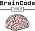
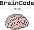
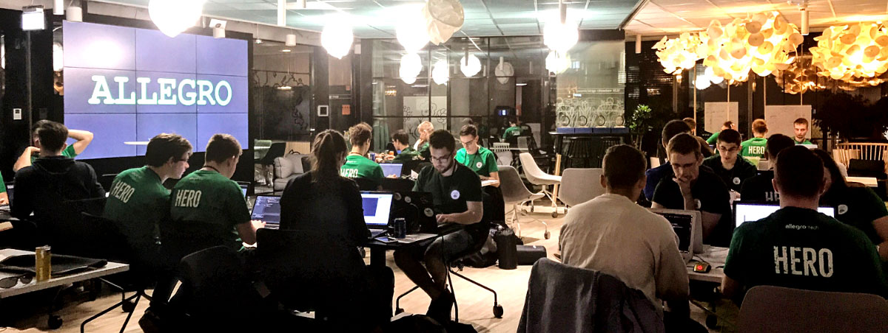
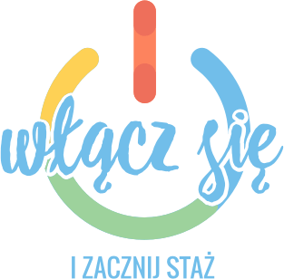

24h HACKATHON
12-13 kwietnia 2019
start 17:30

12-13 kwietnia 2019
start 17:30
BrainCode | from offline to online
Jeżeli liczysz na 24h programowania w gronie zaangażowanych ludzi z głowami pełnymi pomysłów, chcesz dać upust swojej kreatywności w pracy zespołowej a jednocześnie zawalczyć o nagrody i miejsce w programie stażowym - jesteś w odpowiednim miejscu ;) Już dziś zarejestruj się na hackathon BrainCode organizowany przez Allegro!
BrainCode po raz pierwszy odbył się w 2013 roku i był wewnętrznym hackathonem pracowników Allegro. Wydarzenie zmieniło do tego czasu swoją formę i od 5 lat jest otwarte dla wszystkich pasjonatów technologii chcących się zmierzyć w zespołowej rywalizacji. Trzeci rok z rzędu jest to również okazja do rywalizacji o miejsce w programie stażowym Allegro Summer e-Xperience. Więcej informacji o Summer e-Xperience: https://allegro.pl/praca/staze
Pomimo powszechnego dostępu do Internetu sprzedaż w e-commerce to wciąż jedynie 10.2% globalnego rynku handlu detalicznego (5.0% w PL). Przełamywanie barier zakupowych pomiędzy offline a online to jedno z wyzwań dzisiejszej branży e-commerce. W Allegro identyfikujemy kilka obszarów, które mogą stanowić kluczowe bariery pomiędzy zakupami offline a online. Jednym z nich jest obszar dostaw. AllegroSmart! zmienia oblicze polskiego rynku e-commerce i doświadczenie zakupowe klientów. Uczestnicy będą mieć dobę, aby zmierzyć się z wypracowaniem rozwiązań pomagających pokonać bariery zakupowe pomiędzy offline a online.
Możesz zarówno wybrać zadanie przygotowane przez naszych inżynierów i zobaczyć jak wygląda ich praca na co dzień (dostarczymy potrzebne dane/ dostęp do api), lub stworzyć swój projekt, propozycję usprawnienia działania Allegro w zaproponowanych przez nas kategoriach. Więcej szczegółów wkrótce.
Jeśli programowanie i zespołowa rywalizacja to coś dla Ciebie, a dodatkowo chciałbyś/ chciałabyś wygrać staż w jednym z naszych zespołów – BrainCode to wydarzenie zdecydowanie dla Ciebie! Kto wie, może będziesz miał/miała szansę dokończyć projekt jako stażysta lub pracownik Allegro? ;)
 Włącz się! BrainCode 2019 to rywalizacja nie tylko o nagrody finansowe, ale również o miejsce w płatnym programie stażowym Allegro Summer e-Xperience (dla zainteresowanych).
Ten 3-miesięczny program stażowy to niepowtarzalna okazja do pracy pod okiem ekspertów, tworzących jedną z największych firm technologicznych w Polsce. Jeżeli chcesz wziąć udział w rywalizacji o miejsce w programie stażowym, zaznacz to w formularzu zgłoszeniowym. Więcej informacji o Summer e-Xperience: https://allegro.pl/praca/staze
Startujemy 12 kwietnia o godzinie 17:30 w wybranej przez Ciebie lokalizacji. Po rejestracji uczestników i krótkim wprowadzeniu rozpoczynamy 24-godzinne kodowanie, czyli kończymy w sobotę około godziny 18:00. Jury rozpocznie wówczas ocenę projektów. Impreza zakończy się podsumowaniem i wręczeniem nagród najlepszym zespołom (około 20:00).
Podczas hackathonu zapewniamy:
Każdy uczestnik przynależący do zwycięskiej drużyny otrzyma kartę podarunkową na 500 zł do wykorzystania na allegro.pl oraz statuetkę. Przewidziana jest również nagroda publiczności w postaci karty podarunkowej na 300 zł do wykorzystania na allegro.pl dla każdego członka zespołu wyróżnionego w tej kategorii. Niezależnie od wyniku konkursu każdy uczestnik hackathonu, który wyrazi na to chęć, ma możliwość włączenia się do rywalizacji o płatny staż w Allegro.
Do udziału zapraszamy zarówno gotowe zespoły (max 4-osobowe) oraz pojedyncze osoby, które na miejscu połączymy w drużyny.
Zapisy potrwają do 31.03.2019 lub do wyczerpania miejsc... Zapisz się już dziś!
 Poznań
PoznańDołącz do nas w Poznaniu, Warszawie i Toruniu!
{% endcomment %}